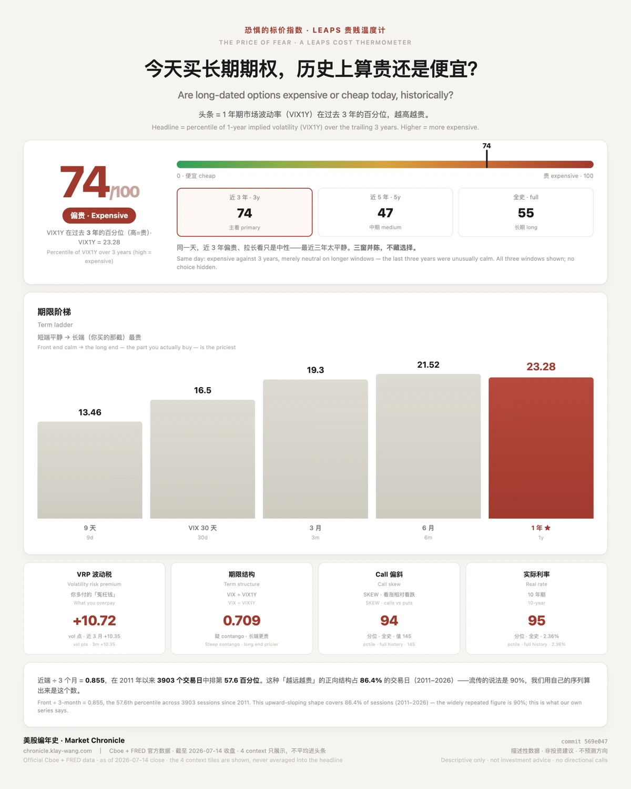

各位好，这是《美股编年史》盘前简报的第 1 期。
先说清楚它是什么：每个交易日盘前一封，只做一件事：把当天的市场状态
用可验证的数字讲清楚。贵不贵、怕不怕、极端不极端。它不告诉你买什么卖
什么，也不预测方向，那些我不会，也不打算假装会。
今天从一件小事说起。同一个市场，同一天，你问它"未来 9 天会有多大波动"
和"未来 1 年会有多大波动"，得到的是两个完全不同的答案：9 天期13.46，平静得几乎没有；1 年期 23.28，在过去三年里排到第 74 百分位：也就是说，过去三年只有约四分之一的日子，长期保险比今天更贵。
这条线叫波动率期限结构，本质上是市场给不同长度的时间开出的风险价格。
像买保险：保一个月和保一年，保费不一样。如果你买的是 12–18 个月的长期
期权，你付的是最右边那根柱子的价；而新闻里报的 VIX，是中间那根。
顺便纠正一个流传的数字。关于期限结构，广为流传的说法是"市场 90% 的时间是正向结构"。我用自己的序列算了一下：2011 年以来的 3903 个交易日里，是86.4%。不是 90。差得不多，但既然能算，就不该猜：这份简报里每个数字都是这个标准。
最后交代一件事。这个数据管线在 7 月 12 到 14 号坏了三天，07-13、07-14 两个交易日没能当日提交，读数是 15 号补录的。已经写进方法论页的「已知特性与局限」了：如果台账的价值在于可验证，那它出问题的时候也必须可验证。